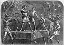

){kind=link}

|
Gold! GOLD in California! How this announcement, some twenty years ago, thrilled the country from the Lakes to the Gulf! How topsy-turvy it turned all preconceived notions as to the idea of slowly-acquired wealth, and opened up dazzling visions of untold riches to the universal Yankee nation! The Gold Fever burst out suddenly and became almost instantaneously a sweeping, raging epidemic. The banker locked up his vaults, the merchant closed his ledger, the lawyer thrust his brief into the grate, and the mechanic left his bench -- all in thorough dis- gust with the old maxim, "slow, but sure" -- turning their faces westward toward the Eldorado of the Pa- cific. Some went by steamer, via the Isthmus; others ventured by sail, to incur the perils of Cape Horn; whilst others still, most venturesome of all, struck out boldly across the unexplored deserts of the Far West, to meet unknown hardships, and encounter perils from flerce beasts and flercer men. With this much of preface, kind reader, let me in- troduce myself. Henry Gregory, aged twenty-two -- a victim of the gold fever -- at your service. . . . Independence, Missouri. In due course of time we reached this young and growing frontier city; a city that was to us the limit of civilization, and the initial point of our journey across the seemingly illimitable prairies of the Far West. . . . Independence was, as I have stated, a sort of mushroom city. Like Jonah's gourd, it had sprung up in a night. Its population was a floating one, and composed of the most heterogeneous material; and, after the manner of all frontier towns, it abounded in drinking-saloons and gambling-shops. The evening prior to our departure was oppressively sultry, and the streets were full of people. Hal and I lit our cigars and started for a stroll. Soon our attention was attracted to a scene under a little clump of trees in front of a "canvas" drinking-shop. A good-sized monte-table covered with red chintz, had been erected, and on it were several piles of half and quarter eagles. A group of half a dozen men stood around the table eyeing the treasure. Behind the table sat two men, the owners, no doubt, of the gambling establishment. One was a large, thickset fellow, with low, repulsive features. His hair was long and unkempt, and his whiskers and shaggy eyebrows were perfectly enormous. He was broad-shouldered, and, apparently, a physical giant. He was dressed in the rude garb of the frontier, and had a belt stuck full of pistols and knives. Undoubtedly he was a rough and ugly customer. His partner was a Mexican. There was no mistaking those clean-cut, sharp, angular features, those black, piercing eyes, those white, ghastly teeth, that dried-up, yellow, peppery skin. He was not a large man, only a trifle above the medium; but every movement and word indicated the craftiness and treachery of the full-blown Mexican. He was, beyond doubt, every inch a knave, and even more to be feared than his brutal-looking companion. The two were Strength and Craft -- always formidable when combined. These two worthies appeared to own the establishment, and to be employing the most seductive and persuasive speeches to entice by-standers and passers-by to try their fortunes in a game of hazard. They were but too successful, for the spirit of gaming ran high. Were we not all, in fact, risking every thing, even our lives, in a mad pursuit of wealth? If wealth were to be gained here, what use to seek further? So many reasoned, and were fleeced of what they had, instead of adding to their means. "Hold on!" whispered Hall into my ear. "This seems to be a regular slaughter-shop. Look, now, that youngster has just lost fifty dollars. What a precious pair of cut-throats these monte-dealers are!" He paused at the table. A half dozen wood torches blazing in the air threw a lurid glare over the entire spot. Hal was a good monte-player. His father had learned it in his voyages to Cuba, for the Spaniards and Cubans are famous for their proficiency in all such games, and had in turn taught it to his family. As we paused at the table, the heavy-whiskered desperado glanced at us from beneath his shaggy brows, and I thought I beheld a sudden furtive gleam in his eye, that meant mischief for both of us. "Who'll try thar luck next?" said he, in a heavy gruff voice, that sounded like the distant mutterings of a storm -- a splendid diapason bass. The group, composed of about a dozen, did not seem inclined to indulge any farther in the play, all of which had heretofore only served to swell the piles upon the red chintz. "Come, boys!" continued the fellow; "faint heart never wins a fair lady, ye know, Hyer's sev'ral piles o' yaller boys a waitin' fur yer pockets. Say, stranger, won't ye try yer luck? Kiver these fifty dollars, hey?" This last remark was addressed to Hal, who instantly replied, in a nonchalant voice: "Fifty green cheese! Where do you s'pose a poor devil like me could raise half that sum? Say ten dollars now, and I don't mind." "Small pertaters, hey!" sneered the bully, who was a little nettled at Hal's complete sang-froid. "Ten dollars hain't wuth countin' skeerce; but as trade's gettin' a leetle dull, we'll try ye on ten of ye sez so." "All right. Proceed," replied Hal. The cards were cut and the game was quickly played -- the golden eagle going to increase the piles on the chintz. "He! he!" laughed the whiskerando. "Got any mere ten spots handy?" "Strapped," replied Hal, with a suggestive shrug, "unless you will put up fifty dollars against my diamond ring." "Humph! the ring's too small for me," growled the bully. "But not for me, Tom Landers," interrupted his companion, the crafty, smooth-tongued Mexican. "Carajo! I will play for it, if you please." "Crack ahead, then!" growled the brutal Tom Landers. "I don't play fur no sech gewgaws as that. If ye want to do it, Senor Guaymas, I hain't nuthin' ter say." The ring, with a cluster of several diamonds, was really a valuable one. It had been presented to Hal's father years before by a rich Cuban planter, and the dazzling brightness of the precious stones had stirred up the avarice of the Mexican gambler. The diamond ring and fifty dollars were put up. The cards were cut -- the game played swiftly. My chum was the winner. "Stop now, Hal," said I. "Let's go." "Carissima!" exclaimed Senor Guaymas, with a most seductive smile: "surely you will not leave fortune just as she comes to you. There is more gold to be won!" "Certainly," answered Hal, with a merry laugh. "We've found a rich gold mine. Let us work it." Fifty dollars against fifty dollars. Again Hall is the winner. His blood is rising. I see the flush on his cheek, and know that the excitement which ever attends gaming is thrilling his nerves. "Cover my hundred -- eh?" he demanded. "Of course," was the reply. Another quick game. Astounding luck! Hal sweeps the board. "Blarst ye!" growled Tom Landers, getting up, and displaying his mammoth proportions. "This hyar's got ter be stopped." Then the two monte-dealers held a short consulta- tion; they were both getting nervous. Two hundred dollars lost in twenty minutes! The crowd gradually increased; they knew these two bankers to be a precious pair of knaves -- knaves who fleece their victims by the dozen hourly. They are seldom beaten; yet the youth scarcely out of his teens is winning their gold rapidly. There is sport ahead, reasons the crowd. "Cover my two hundred?" asked Hal, lighting a fresh cigar as he spoke. Senor Guaymas and Tom Landers were still con- sulting. Two hundred dollars was all they had left. They hesitated to accept the risk. If they should lose, the bank was broken; if they declined to play, they stood no chance to recover what had already been lost. They answered: "We cover the two hundred." The excitement grew as the game progressed. A yell from the crowd announced the result. "The bank is broken!" The crowd spoke the truth, for my chum was the possessor of four hundred in gold. There was not a quarter eagle left upon the table. I was amazed. The two gamblers looked at each other. Tom Landers's face was in a tempest of passion, and his eyes shot broadsides of fury over the chintz table. The Mexican was mad as a hornet, but too politic to show it. "Cover my four hundred?" How tantalizingly Hal asked that! It stung Senor Guaymas to the quick, for I saw his lip quiver and his eye snap. It was the last hair that broke the camel's back. He whirled suddenly about, with an expression of malice upon his thin, sallow features, that I never saw equaled. I regretted now that Hal had pushed matters so far -- these Mexicans are so passionate and so vindictive. A street fight was by no means desirable, especially with with such characters as these gamblers. It does not take much on the frontier to bring blows and blood. Suddenly Senor Guaymas decided: he thrust his hand into an inner breast pocket. I had seen such motions before: the wretch was about to draw a pistol upon my chum; so I placed my revolver in such a position that I could use it on the instant, and watched the Mexican. My suspicions were at fault. I did the rascal injustice. He drew out his hand, and placed a diamond studded brooch upon the table. It was superb: a splendid lady's pin, the like of which is seldom seen. "That brooch is worth double your pile," said the Mexican, glancing warily over the crowd. "Will you cover it? I warrant it genuine." "More jewelry," laughed Hal. "Certainly I'll cover it." The game went on, and, terrible fatality! the banker lost, and the diamond brooch was my friend's. "El demonio! what accursed luck!" hissed the Mexican between his tightly compressed lips, as his face grew livid. "Cover the whole pile now -- gold, watch, ring, and brooch?" continued Hal, with frigid coolness. "No, curse you!" roared the banker, no longer able to control his feelings. "I've nothing left. You've ruined me!" My chum bit off the end of his cigar, and threw it away. Then I saw a peculiar twinkle in his eye. He learned over the table and said, "I'll tell you what I'll do." "What?" "Play for scalps." The Mexican started back aghast. Then his black eyes gleamed balefully and in a frenzied tone he said, "Done, by all the saints!" "No, no!" I interposed, laying my hand on my chum's shoulder. "For Heaven's sake, stop! this has gone far enough already. Don't carry it farther." I was horrified at the proposition, and dreaded the bloody scene that was certain to follow. Hal was in no mood to listen to my objections, but pushed away my hand rather unceremoniously, and replied, "Humph! we must finish the contest in good style. If the scoundrel wants my scalp, he's welcome to get it. I'm sure I can lift his with marvelous grace. Down with the cards, old yellow-belly." The excitement was at a white heat; the crowd, which had increased to a full score, jostled and swayed to and fro in a tremor of expectation. Senor Guaymas was livid and ghastly; he threw down the cards, which were hastily cut, and the game proceeded. All held their breaths and strained their eyes. "Carajo! lost, lost!" groaned the unfortunate Mexican, striving to steady himself at the table as the crowd yelled and jeered at his terrible luck. "Satanas take you and your tricks! You are in league with the Evil One. I am undone; take the stakes." "No, by hokey! nothin' o' that sort hyar," roared Tom Landers, in a voice like a bull. "My partner hain't a goin' ter be scalped by no sech leetle whiffet as you puppy. I allus stands by my friends, an' I'm not goin' ter play false to 'em now." The bully pushed forward and drew his mammoth proportions up to their full height; his face was red with anger and strong whisky. The crowd drew back a little, apparently awed somewhat by the deflant and formidable aspect of the furious desperado. Hal leaped square upon the table and glanced over the crowd. He saw a score of excited faces upturned; he saw the gleam of forty flashing eyes; he heard the mutterings of passion. "Say, men!" he cried, in a clear, calm voice. "You have watched this game. Did I win it fairly?" "Yes, yes!" yelled the crowd. "Is the Mexican's scalp fairly mine?" "Yours, yours!" roared a score of throats. "Then, by St. Paul, I'll have it!" said my chum, drawing his formidable bowie. "Down with your head on this table, old Guaymas." The Mexican grew pale, and his knees smote together; he presented an aspect of mute terror that was appalling; he stood rooted to the ground. Click! came the cocking of a revolver. Tom Landers had drawn his six-shooter and thrust it toward Hal. Hal did not flinch a particle, but held his knife in his right hand, and eyed the bully. I leaped upon the table, holding my Colt ready, with finger on the trigger, and stood by my chum's side. "Shoot if you dare, you cowardly cut-throat!" I said, with as much coolness as I could command. "It will be your last shot." There was a rustle in the crowd, and the next instant a tall, slab-sided trapper, carrying in his hands an enormous rifle, emerged from the crowd, and confronted the glowering Tom Landers. The trapper threw his rifle to a level, and drew a bead upon the bully. "Tom Landers," said he, in a gruff voice, "if ye don't put up that leetle shootin-iron, I'll put the contents o' old Black Bess through yer noddle quicker 'n greased lightnin' 'd kill a b'ar. The boy has won the scalp; an if thar's any virtue in my muscle, he'll hev it too." The balance of this exciting story is continued in No. 14 of the Fireside Companion, issued on Friday of this week (Jan. 24), and is for sale by all News Dealers in the United States and Canada, and mailed from the office of GEORGE MUNRO & CO., 137 William Street, New York.
137 William Street, New York. |